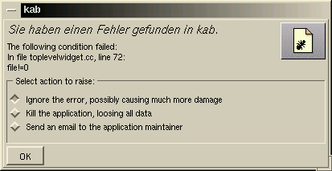

Kurzanleitung zum KDE-Adreßbuch
Das Adreßbuch soll eine einfache Möglichkeit zum Verwalten von
Angaben über Personen, mit denen der Benutzer in Kontakt steht, ermöglichen.
Dabei wird angestrebt, die gespeicherten Daten soweit wie möglich
anderen Applikationen zur Verfügung zu stellen, so daß es nicht
notwendig ist (oder sei sollte), die Daten in den Datensätzen verschiedener
Programme aufzubewahren.
Die Anleitung gliedert sich in eine Funktionsübersicht, eine Erläuterung
der einzelnen Funktionen und einen technischen Anhang.
Interessierte Benutzer sollten zusätzlich den Abschnitt über
die Behandlung von Programmfehlern lesen, um, insofern sich die Ursache
von Fehlern eingrenzen läßt, diese dem Autor mitteilen zu können.
Ein stabiles Programm ist der Lohn der (häufig großen) Mühe
der freiwilligen Tester, wofür ich mich im voraus bedanke.
Inhalt
Funktionsübersicht
Das Adreßbuch stellt die folgenden Grundfunktionen zur Verfügung:
-
Verwalten von Personendaten wie Namen, Vornamen, Postanschriften, Telefonnummern,
Emailadressen und Geburtstagen,
-
Bereitstellen dieser Daten für andere KDE-Anwendungen,
-
Starten des vom Benutzer gewählten Email-Programms zum Editieren
einer Email an die angezeigte Person,
-
Starten des vom Benutzer gewählten Talk-Programms für direkte
Kommunikation mit demjenigen welchen, und
-
Anzeigen der Homepage der ausgewählten Person über KDE's Browser
kfm oder einen anderen Web-Browser.
Es gibt einige weitere Details, aber das sind die Hauptfunktionen. Ziel
der Entwicklung war das Bereitstellen einfach zu bedienender, stabiler
Grundfunktionalität.
Erläuterung der einzelnen Funktionen
Die Oberfläche
Nach dem Start zeigt das Adreßbuch ein Fenster an, dessen Hauptteil
eine Visitenkarte abbildet. Jeder Eintrag stellt die Daten einer Person
dar, mit den Tasten "<-" und "->" kann zwischen den Einträgen hin-
und hergeschaltet werden. Ein neu angelegtes Adreßbuch zeigt ein
leeres Feld an.
Die Funktion der einzelnen Schaltflächen wird erläutert,
wenn der Mauszeiger über ihnen stehengelassen wird. Die Funktionen
der Schaltflächen sind auch über das Menu erreichbar.
Die Statuszeile am Boden des Fensters zeigt die Anzahl der Einträge
und die laufende Nummer des aktuellen Eintrages sowie Meldungen des Programms
an.
Der Einstieg
Die neu angelegte Datenbank ist leer. Um die Daten einer Person abzulegen,
muß ein neuer Eintrag angelegt werden. Dazu klickt man auf das Feld
mit der stilisierten Karteikarte, worauf sich ein Dialog öffnet, in
dem die einzelnen Daten eingetragen werden können. Die Bedeutung der
Datenfelder ist weitgehend selbsterklärend. Sind alle Daten korrekt
eingegeben, wird "OK" angeklickt. Der Eintrag wird in die Datenbank übernommen.
Die von Ihnen eingegebenen Daten werden automatisch vom Programm gespeichert
- wenn das Adreßbuch das nächste Mal gestartet wird, erscheinen
alle Einträge so, wie Sie sie verlassen haben.
Emails versenden
Insofern Sie zu einem Eintrag eine Email-Adresse angegeben haben, können
Sie durch Aktivieren des Menupunktes "Editieren->Email versenden" (oder
der Tastenkombination STRG und M) das KDE Email-Programm starten, welches
Ihnen anbietet, den Text der Email einzugeben.
(Hinweis: dazu ist es möglicherweise notwendig, das Email-Kommando
und die Email-Parameter zu setzen. Dazu editiert man (leider noch) die
Adreßbuch-Datendatei mit einem Editor
und verändert dort die entsprechenden Werte. Setzen Sie keine nicht
notwendigen Leerzeichen, verändern Sie die Schlüssel (links vom
Gleichheitszeichen) nicht und beachten Sie die groß- und Kleinschreibung.
Das Schlüsselwort <person> in den Email-Parametern wird
mit der Email-Adresse ersetzt, das Schlüsselwort <subject>
mit einem eventuellen Thema.)
Browser aufrufen
Ein Datensatz, der die Internet-Adresse der Homepage des betreffenden enthält,
ermöglicht es Ihnen, durch Aktivieren des Menupunkts "Editieren->Browser
starten" (oder der Tastenkombination STRG und B) die Seite vom Dateimanager
anzeigen zu lassen.
Einträge durchsuchen
Unter dem Menupunkt "Datei->Einträge durchsuchen" können Sie
bestimmte Datenfelder der Einträge nach Mustern durchsuchen. Geben
Sie zum Beispiel "Meier" ein und selektieren Sie das Datenfeld "Name",
um alle Einträge, deren Name "Meier" ist, herauszufinden. Die Suchergebnisse
werden im Programmfenster angezeigt, durch Anklicken eines Eintrags in
der Liste wird dieser dargestellt.
Sie können für die Suche Muster verwenden. Diese Muster entsprechen
denen, die Sie (möglicherweise) aus dem Filtern von Verzeichnisansichten
kennen, also etwa ein Stern für eine beliebige Zeichenfolge. Das Suchmuster
"*er" angewandt auf das Namensfeld findet alle Einträge, bei denen
der Name auf "er" endet.
Die einzelnen Datenfelder
Die Anzahl der verschiedenen möglichen Daten einer Person ist verhältnismäßig
groß, gleichzeitig machen bestimmte Daten nicht bei allen Personen
Sinn. Deshalb zeigt das Adreßbuch nur die Daten im Visitenkartenfeld
an, die Angaben enthalten. Beginnen Sie einen neuen Eintrag oder editieren
Sie einen bereits eingegebenen, so sehen Sie einen Dialog aus mehreren
Teilen, die Angaben zu bestimmten Bereichen enthalten.
Die Bedeutung der Felder Titel, Vorname, zweiter Name
und Name braucht wohl nicht erläutert zu werden. Der formatierte
Name dient dazu, den als Namen angezeigten Text festzulegen. Normalerweise
setzt das Programm diesen aus den vorher genannten Feldern zusammen. Sollte
es dabei Fehler machen oder für eine bestimmte Person vom Standardvorgehen
abgewichen werden, gibt man die Schreibweise im Feld "Formatierter Name"
an. Sobald dieses Feld Daten enthält, ersetzen diese die normalerweise
angezeigte Namenszeile.
Die Felder Organisation, Position, Abteilung und
Bereich dienen zur Beschreibung zum Beispiel von Mitarbeitern von
Unternehmen, mit denen man in Kontakt steht.
Des Kontakte-Formular enthält Angaben zu den verschiedenen Möglichkeiten,
die Person zu erreichen. Wenn Sie eine Email-Adresse eingeben, können
Sie nach dem Abspeichern eine Email an die
Person verschicken. Geben Sie die Adresse der Homepage der Person
ein, können Sie nach dem Abspeichern einen Browser
aufrufen, der diese anzeigt.
Im letzten Teil können Sie den Geburtstag des Betreffenden
und einen Kommentar eingeben. Zum Eingeben des Geburtstages doppelklicken
Sie auf das Geburtstagsfeld, es erscheint ein Dialog, in dem Sie ein Datum
auswählen können.
Konfiguration
Die Konfiguration ist noch nicht komfortabel implementiert. Risikofreudige
Anwender können die Adreßbuchdatenbank
editieren, wodurch die meisten Konfigurationsmöglichkeiten bereits
jetzt zur Verfügung stehen, sollten die Datei vorher aber absichern.
Viel Glück.
Ich werde in der Zwischenzeit die grafische Konfiguration programmieren.
kab's Dateien
kab erstellt einige Dateien in Ihrem Home-Verzeichnis, die allerdings
versteckt sind. Sie finden sie im Verzeichnis
$HOME/.kde/share/apps/kab/
Das Verzeichnis enthält die Datei addressbook.database, welche
wiederum die Adressen enthält, und (insofern Sie kab bereits
mindestens zum zweiten Mal gestartet haben) eine zweite Datei namens addressbook.database.backup.
Solange Sie kab nutzen, können sich im Datenverzeichnis weitere
Dateien befinden, die kab zum Betrieb benötigt.
Das Backup-File
kab erstellt bei jedem Start eine Kopie Ihrer Adreßbuch-Datei
in seinem (versteckten) Datenverzeichnis.
Diese Datei enthält den Stand Ihres Adreßbuchs, den kab beim
letzten Start des Programms vorgefunden hat. Wenn Sie kab jetzt
im Augenblick gestartet haben, enthält die Datei den Stand beim Start
des jetzt laufenden Prozesses.
Sollten Sie aufgrund eines Programmabsturzes oder einer "gewaltsamen"
Beendigung des Programms nach dem Abfangen
eines Fehlers befürchten, daß Ihre Adreßbuch-Datenbank
beschädigt wurde, kopieren Sie Sich die Backup-Datei an einen sicheren
(anderen!) Ort, bevor (!) Sie kab ein weiteres Mal starten
(zum Kopieren öffnen Sie kab's Datenverzeichnis mit dem KDE Dateimanager
und ziehen die Backup-Datei auf den Desktop. Bestätigen Sie mit "Kopieren".)
Ist Ihre Datei tatsächlich beschädigt worden, überschreiben
Sie die Adreßbuch-Datei mit Ihrer Kopie des Backups.
Fehlerbehandlung
Wenn Sie den folgenden Dialog sehen, ist ein Fehler in kab entdeckt
worden.

Sie haben nun drei Möglichkeiten, darauf zu reagieren:
-
Sie ignorieren den Fehler. kab fängt viele Fehler ab, die nicht
wirklich kritisch sind. Trotzdem ist es möglich (und auch recht wahrscheinlich),
daß der Fehler kritisch ist. In diesem Fall wird das Programm Fehler
begehen, die Ihre Daten gefährden können. Speichern Sie also
nach einer Fehlermeldung ab und beenden Sie kab. Nach einem Neustart
könnten Ihre Daten noch vorhanden sein (sollte Ihnen ein solcher Fehler
das erste Mal auffallen, lesen Sie in jedem Fall den Abschnitt Das
Backup-File).
-
Sie beenden daß Programm (was hier auf eine recht rigide Weise erfolgt).
Alle Änderungen, die Sie eingegeben haben und die noch nicht abgespeichert
wurden, sind unwiederbringlich verloren. Nun, nicht ganz unwiederbringlich,
siehe Abschnitt Das Backup-File.
-
Sie senden eine Email an den Autor des
Programs. Diese Funktion sollten Sie nur nutzen, wenn dieser (genau dieser)
Fehler bei Ihnen zum ersten Mal auftritt. Das Programm wird selbständig
einige Informationen über den Fehler hinzufügen. Details über
Ihren Rechner werden nicht ausspioniert, versprochen.
Das Versenden einer Email kann fehlschlagen, wenn kab bereits zu sehr durcheinandergeraten
ist. In diesem Fall können Sie Sich die kryptischen Angaben notieren,
die im Fehlerfenster angezeigt werden und mit Ihrem Lieblingsmailprogramm
an den Autor versenden.
Technischer Anhang
Später.
-
vCard ist ein Warenzeichen von Versit. Versit ist eine Initiative von Apple,
AT&T, IBM und Siemens.
Mirko Sucker
Last
modified: Wed Feb 4 20:52:25 MET 1998